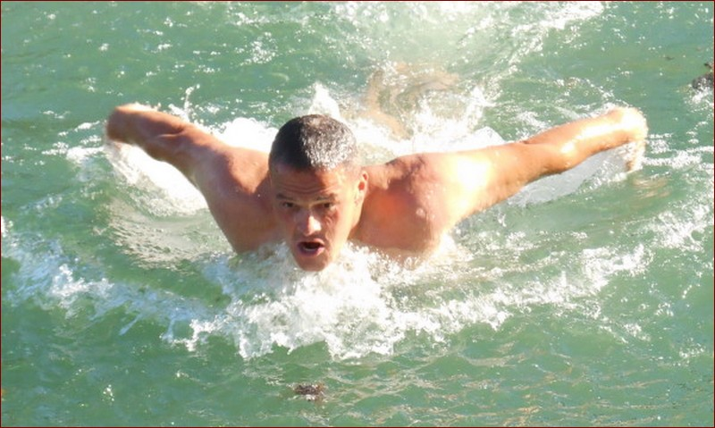
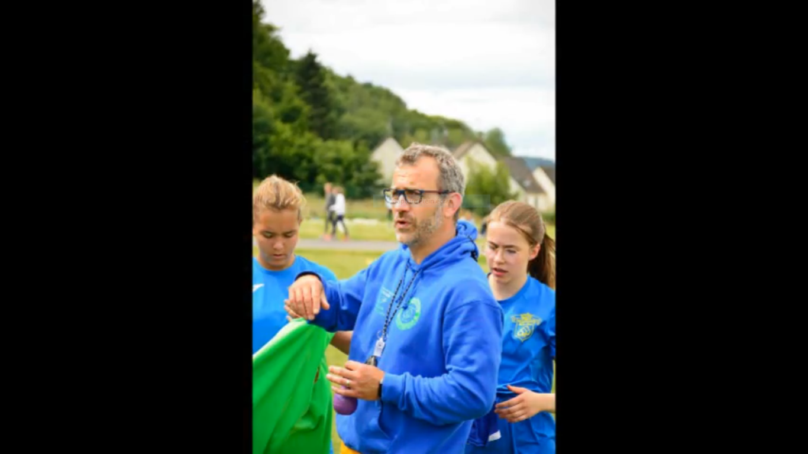

En 2006 Mr Péron débarque à Saint-Ouen
pour son premier poste de professeur
d’éducation physique.Aujourd'hui il entraine
une équipe de foot. Mais il ne s'arrête pas là,
il entraine le pôle triathlon de Saint-Ouen
à la natation et participe à des activités
extérieures avec ses élèves.


Ceinture noire 5ème Dan
Diplômé d’état
Entraîneur et sélectionneur départemental kata
combat de 2007 à 2013
Vainqueur de la coupe de France Shito-ryu kumité en
Champion de France kumité shito-ryu en 2006
Vainqueur de la coupe du monde shito-ryu kumité en 2005
Vice champion de France Kumité en 2015 et 2017
10 podiums nationaux
Et avec ce palmarès impressionant Jérémy Bunel est professeur
d'education physique et sportive à Saint-Ouen et entraine le pôle
triathlon à la course à pieds et le vélo.


En 2018 M. Matura rejoint l'équipe des profs
de sport de Saint-Ouen, ceinture noire 2e dan de judo
il crée une activité judo au lycée pour s'y initier.

En 2018, la même année que Monsieur Matura, M. Lalis
rejoint l'equipe de prof de sport de Saint Ouen.
Il se charge des classe collège mais aussi lycée
et aide le pôle triathlon